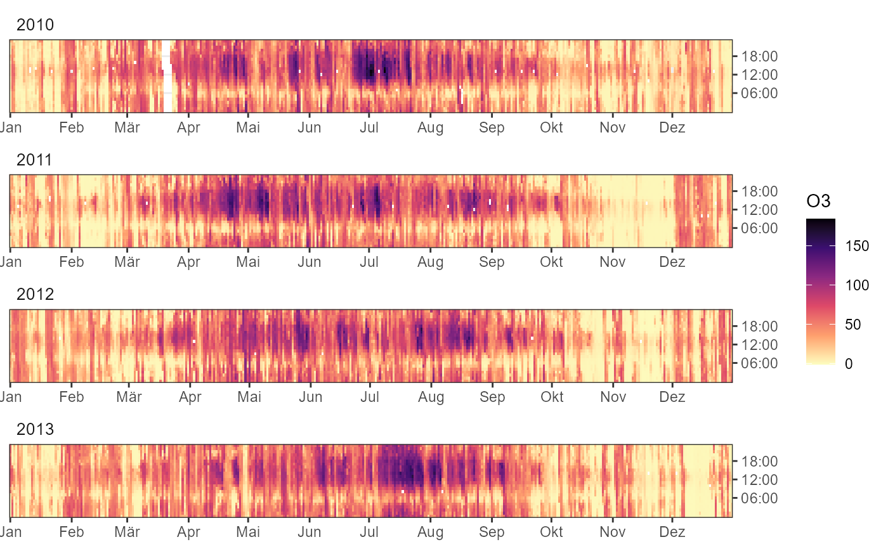
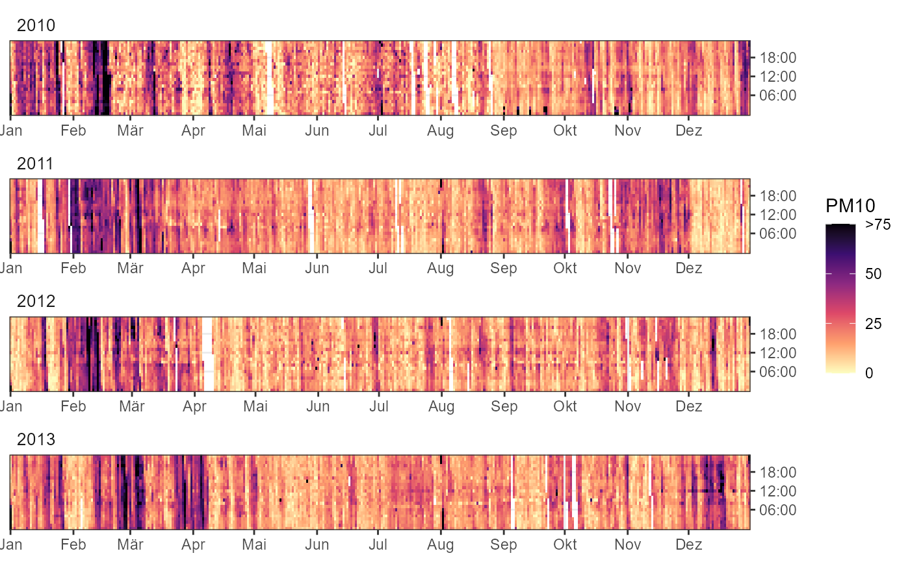
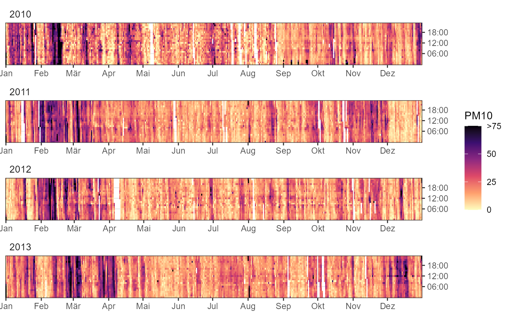

creates a heatmap with date on x-axis and time of day on y-axis; z values as fill scale.
Usage
ggyearday(
data,
time,
z,
date_breaks = "1 month",
date_labels = "%b",
ybreaks = seq(6, 18, 6),
ylabels = format_sprintf("%02d:00"),
fill_scale = scale_fill_viridis_c(direction = -1, na.value = NA, option = "A"),
...
)Arguments
- data
a data.frame or tibble with input data (containing a POSIXct variable as time parameter).
- time
symbol giving time column
- z
symbol giving z column used as fill
- date_breaks
character string as input for
ggplot2::scale_x_date(), e.g. '1 month', defines date breaks on x-axis.- date_labels
character string as input for
ggplot2::scale_x_date(), formatter for date labels on x-axis.- ybreaks
numeric vector, specifies y-axis breaks.
- ylabels
function, format function for y-axis labels.
- fill_scale
ggplot2 continuous fill scale, e.g.
scale_fill_gradient().- ...
other arguments passed on to
ggplot2::geom_raster().
Examples
library(ggplot2)
fn <- rOstluft.data::f("Zch_Stampfenbachstrasse_2010-2014.csv")
# only 4 years for smaller plot size in examples
df <-
rOstluft::read_airmo_csv(fn) %>%
dplyr::filter(starttime < lubridate::ymd(20140101)) %>%
rOstluft::rolf_to_openair()
ggyearday(df, time = "date", z = "O3")
#> Warning: Removed 396 rows containing missing values or values outside the scale range
#> (`geom_raster()`).

# data with outliers / extreme values => not very informative...
ggyearday(df, time = date, z = PM10)
#> Warning: Removed 2227 rows containing missing values or values outside the scale range
#> (`geom_raster()`).
 # ...use a custom scale and squish the outliers / extreme values
fill_scale <- scale_fill_viridis_squished(breaks=c(0, 25, 50, 75), limits = c(0, 75),
direction = -1, na.value = NA, option = "A")
ggyearday(df, time = date, z = PM10, fill_scale = fill_scale)
#> Warning: Removed 2227 rows containing missing values or values outside the scale range
#> (`geom_raster()`).

# ...use a custom scale and squish the outliers / extreme values
fill_scale <- scale_fill_viridis_squished(breaks=c(0, 25, 50, 75), limits = c(0, 75),
direction = -1, na.value = NA, option = "A")
ggyearday(df, time = date, z = PM10, fill_scale = fill_scale)
#> Warning: Removed 2227 rows containing missing values or values outside the scale range
#> (`geom_raster()`).
